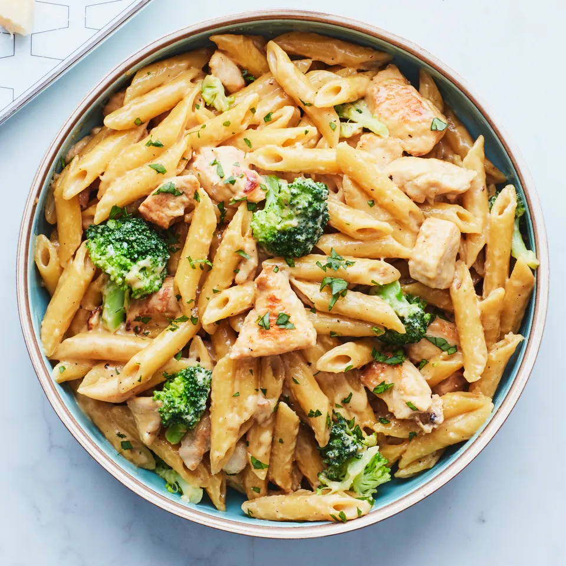

Pasta Recipe

Pasta salads are great to have on a picnic, BBQ lunch, or as a side dish for any main meal. My Mediterranean Pasta Salad is a healthier version without using any mayonnaise or nasty's but not missing on any flavour!
Without any cooking at all besides cooking the pasta, it can be made in 15 minutes. All you need to do is dice the beautiful ingredients, combine it all together with your dressing and give it a good toss together and you're done!
Ingredients
- Pasta
- Cherry Tomatoes
- Kalamata Olives
- Red Onion
- Parsley
- Feta Cheese
- lemon
- Extra Virgin Olive Oil
- Salt and Pepper to Taste
Steps
- Dice onion into small cubes and slice cherry tomatoes along with kalamata olives into halves
- Boil pasta to al dente in heavily salted water (refer to instructions on packet for the timing). Note don't overcook the pasta as it will become mushy
- While the pasta is cooking, pour dressing ingredients into a large bowl and whisk until combined. Remember not to add too much salt as the olives and feta are quite salty.Add half of the chopped parsley to the dressing
- Once pasta is cooked, strain and add straight to the big bowl with the dressing while its still hot. Mix well so the dressing coats all the pasta
- Let stand for 5-10 minutes until it has cooled, then add all ingredients except for the feta. Mix until well combined
- Crumble over the feta upon serving alongside your favourite protein or enjoy on it's own. This salad also works great as a side dish for a barbecue or picnic salad